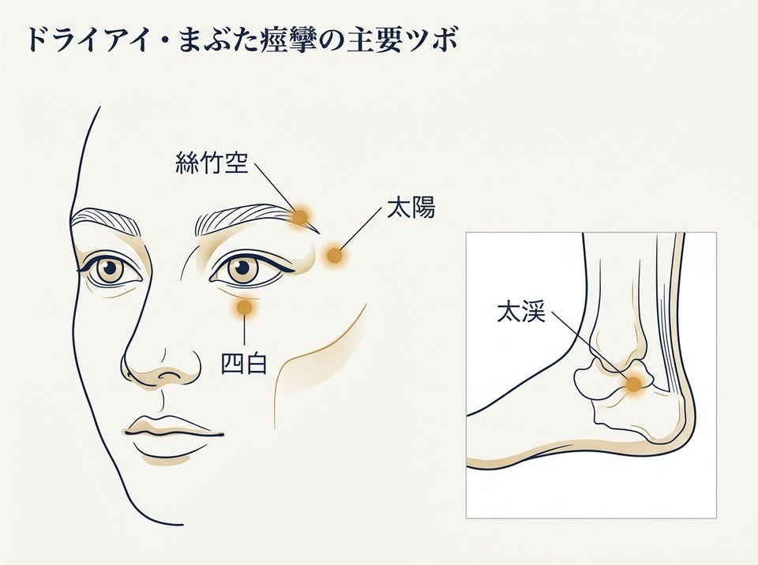

ホルネル症候群の鍼灸
頚交感神経路の障害で眼瞼下垂・縮瞳・発汗減少が生じる症候群です。重篤な基礎疾患の病院精査と治療が最優先となります。


院長YouTube解説・関連動画
公開日：２０２１年 ５月１１日
更新日：２０２３年 ９月 ９日
本日はホルネル症候群について解説させていただきます。
☆本記事の内容
- •ホルネル症候群とは
- •ホルネル症候群の原因
- •ホルネル症候群の症状
- •ホルネル症候群の改善方法
- •ホルネル症候群のまとめ
- •ホルネル症候群は、交感神経の遠心路の障害によって起きる症候群
- •ホルネル症候群の原因は生まれつきのことも病気のこともある
- •主な症状は、顔の片側の瞼の垂れ下がり、瞳孔の縮小、眼球の後退
- •ホルネル症候群に効果的な改善方法はない
- •先天性のホルネル症候群
銀座そうぜん鍼灸院の宗前です。
このページを書いている私は、鍼灸師として１３年、担当した利用者様数８０，０００人を誇り、病気の休職者３００人を社会復帰できるまで回復させてきた実績があります。
ホルネル症候群の原因は生まれつきのことも病気のこともある
ホルネル症候群の原因は、交感神経の神経線維の中の遠回りの経路で障害が起こることです。
ホルネル症候群は自然に起こることも生まれつき起こることもあります。さらに、他の病気が原因となり起きることもあります。
ホルネル症候群の原因となる病気には、肺がんや腫瘍、首のリンパ節の腫れ、大動脈の解離、頸動脈の解離、胸部大動脈瘤などです。
ホルネル症候群は、三叉神経の一部である頚交感神経路が障害を受けることによって生じる神経学的症状群です。この症候群は、瞼垂れ、瞳孔狭小、および顔面の発汗減少または欠如という三つの主要な症状から成ることが多いです。
ホルネル症候群の原因にはさまざまなものが考えられます。以下に主な原因や機序について説明します。
外傷：交通事故や手術、体の打撲などの外傷が頚部や上部の胸部に及び、交感神経を損傷することがホルネル症候群の原因となることがあります。
腫瘍：頚部や上部胸部、頭部にできる腫瘍や腫れ物が交感神経を圧迫することでホルネル症候群を引き起こすことがあります。特に肺の頂部に発生する肺がんは、その位置から「パンコースト腫瘍」と呼ばれることがあります。この腫瘍が交感神経を圧迫・浸潤すると、ホルネル症候群を引き起こすことが知られています。
神経障害：糖尿病や感染症、その他の神経を障害する疾患や状態が、交感神経の機能を低下させることによってホルネル症候群の原因となることがあります。
血管障害：動脈瘤や血管の炎症、血栓などの血管の障害が交感神経を圧迫または損傷することで、ホルネル症候群を引き起こすことがあります。
先天性：生まれつきの交感神経の異常や欠如によって、ホルネル症候群が発症することがあります。
感染症：中耳炎や髄膜炎、結核などの感染症が交感神経を障害することでホルネル症候群の原因となることがあります。
薬物・毒物：ある種の薬物や毒物が交感神経を損傷する作用を持っており、これがホルネル症候群を引き起こすことがあります。
不明：すべてのホルネル症候群で明確な原因を特定することはできません。原因不明の場合もあるため、詳しく調べなければいけないことあります。
ホルネル症候群は、これらの原因や病態によって交感神経が障害を受けることにより発症します。
主な症状は、顔の片側の瞼の垂れ下がり、瞳孔の縮小、眼球の後退
ホルネル症候群で起きる症状は、上瞼が垂れ下がる眼瞼下垂や瞳孔の収縮、眼球の後退などです。瞳孔が収縮することによって、暗い場所で眼が見えにくくなることもあります。
ほとんどの場合、ホルネル症候群を発症しても視力が変わったと自覚をすることはありません。
さらに、異常が起こった側の顔面での汗の量が正常より少なくなるという症状も起こります。全く汗をかかなくなることもあります。時には、顔面に紅潮が現れることもあります。
ホルネル症候群は、特定の神経経路の障害に関連する一主に頚交感神経路の障害が原因となります。以下に、ホルネル症候群の主要な症状を説明します。
1. 瞼垂れ (Ptosis)
瞼垂れは、上瞼が正常な位置よりも下に位置する状態を指します。ホルネル症候群の場合、患者の片方の上瞼が下がることが一般的です。これは、頚交感神経の障害により、上瞼を持ち上げる筋肉への信号が減少または中断されるためです。この瞼垂れは、疲れやすくなる、視野が狭くなるなどの影響を及ぼすことがあります。
2. 瞳孔狭小 (Miosis)
ホルネル症候群におけるもう一つの顕著な症状は、瞳孔狭小です。これは、片方の瞳孔が通常よりも小さくなる状態を指します。交感神経が瞳孔を拡大する作用を持っているため、この神経の障害により、瞳孔が正常に拡大できなくなります。暗い場所での視覚に問題が生じることがあります。
3. 発汗障害
ホルネル症候群では、顔の一部または全体での発汗の減少または欠如を経験することがあります。これは、交感神経が発汗の制御に関与しているためです。患者は、障害された側の顔が暖かく感じるか、あるいは完全に乾燥していると感じることがあります。
4. その他の症状
上記の三つの症状はホルネル症候群の「クラシックな三徴」として知られていますが、他にもいくつかの症状が関連することがあります。
視覚障害：瞼垂れや瞳孔狭小の影響で、視野が制限されることがあります。特に暗い環境での視覚が低下することが一般的です。
顔面の血流変動：一部では、障害された側の顔の血流が増加することを報告しています。
感覚異常：顔や首の一部に感覚異常や痛みが生じることがある。これは、関連する神経経路の障害やその他の原因によるものです。
ホルネル症候群の症状は、原因や障害の位置、範囲によって異なる場合があります。そのため、これらの症状を持つ人が病院に行く際は、詳しい病歴の取得や調べが行われることが一般的です。
ホルネル症候群に効果的な改善方法はありません。
明らかな原因がわかっている場合は、その原因に対して改善を行うことでホルネル症候群の改善にもつながります。
ホルネル症候群の典型的な症状は、瞼が垂れ下がることです。瞼の垂れ下がりは一般的にはごくわずかです。そのため、特別な改善を必要としないことも多いです。
ホルネル症候群は神経学的症状群であり、頚交感神経路の障害によって特定される一連の症状を有しています。改善の目的は、原因となる病気や障害を対処し、症状を和らげることです。
1. 原因の特定と改善
ホルネル症候群の最も効果的な改善は、その原因となる病気や障害を特定し、適切に改善することです。以下は、ホルネル症候群の一般的な原因とその改善法についてです。
外傷: 事故や手術などの外傷が原因である場合、手術やリハビリテーションなどが必要になることがあります。
腫瘍: 腫瘍が原因の場合、手術、放射線、抗がん剤などが検討されます。
血管障害: 血管の障害や動脈瘤が原因の場合、手術や血管内の改善が選択されることがあります。
感染症: 感染が原因の場合、抗生物質や他の薬が行われることがあります。
2. 症状に対する対処
ホルネル症候群の症状、特に視覚関連の症状に対する改善が考えられます。
瞼垂れ: 瞼垂れの程度が著しい場合や、日常生活に支障をきたす場合は、瞼の手術を検討することがあります。
瞳孔狭小: 瞳孔の狭小に対する直接的な改善は限られていますが、暗い環境での視覚障害を軽減するためのアドバイスやサポートが提供されることがあります。
3. リハビリテーション
ホルネル症候群に伴う神経の損傷に対するリハビリテーションが考えられる場合があります。物理法や作業法を通じて、日常生活の質の向上や機能の回復を目指します。
4. カウンセリングとサポート
ホルネル症候群の症状や改善に関連する心理的、感情的な問題に対処するためのカウンセリングやサポートも重要です。
5. フォローアップ
ホルネル症候群の原因や病態に応じて、定期的なフォローアップが必要となる場合があります。
ホルネル症候群の改善は、原因となる病気や障害を中心に考えられます。しかし、その症状や影響は個人によって異なるため、個別のニーズや状態に応じたアプローチが必要です。
ホルネル症候群の瞳孔狭小は、頚交感神経路の障害によるものです。瞳孔狭小自体に対する改善は限られていますが、症状の改善や生活の質の向上を目的としたいくつかのアプローチが考えられます。
1. 原因の特定と改善
瞳孔狭小の最も根本的なアプローチは、ホルネル症候群の原因を特定し、その原因を改善することです。例えば、腫瘍や外傷、感染症などが原因であれば、これらの改善を行うことで、瞳孔狭小も改善する可能性があります。
2. 光学的アイディア
光学的なヘルプや工夫を用いることで、瞳孔狭小による暗所での視覚障害を軽減することが可能です。
拡大鏡: 読書や手仕事など、詳細な作業を行う際に拡大鏡を使用することで、瞳孔狭小の影響を最小限に抑えることができます。
適切な照明: 暗所での視覚障害を和らげるために、作業場所や生活空間における照明の調整が有効です。特に、タスクライトや方向性のある照明を使用することで、局所的に明るい環境を作り出すことが可能です。
3. 薬
現在、瞳孔狭小を直接的に改善するための薬は一般的には利用されていません。ただし、特定の状況下で、眼科医や神経内科医と相談して、瞳孔を拡大させる目的で点眼薬を使用する場合があります。
4. 生活習慣のアドバイス
瞳孔狭小の影響を最小限にするための生活習慣のアドバイスや工夫が有効です。
適切な休息: 疲労は視覚障害をさらに悪化させることがあるので、定期的な休息をとることが推奨されます。
安全対策: 暗い場所での移動や活動をする際は、安全対策をとることが重要です。例えば、夜間の外出時には懐中電灯を持参するなどの工夫が考えられます。
ホルネル症候群やその症状についての理解とサポートは本人や家族にとって非常に重要です。専門家との継続的なコミュニケーションや、必要に応じてサポートグループに参加することで、病状の管理や生活の質の向上を図ることができます。
ホルネル症候群は自然に起こることも、頭や脳、首、脊髄の病気が原因で起こることがあります。さらに、生まれつきホルネル症候群が起こっている人もいます。この場合を先天性ホルネル症候群と言います。
先天性のホルネル症候群の場合、生まれた時から異常がある側の眼の虹彩が青灰色でをしています。この虹彩の色は、成長しても変わらずそのままの色です。
▼ 詳しく知りたい項目だけタップして開けます（全項目の医学解説を収録）
01. 原因とメカニズム
なぜ症状が起きるのか・鍼灸の作用機序を読む
▼
01. 原因とメカニズム
なぜ症状が起きるのか・鍼灸の作用機序を読む
視床下部から脊髄、頸部を経て眼へ至る頚交感神経遠心路（3つのニューロン経路）のいずれかが障害されて発症します。片側の眼瞼下垂、縮瞳、顔面発汗減少が三徴です。先天性や特発性のほか、内頸動脈解離、大動脈解離、肺尖部腫瘍（パンコースト腫瘍）、胸部大動脈瘤、外傷、感染症などの重篤な基礎疾患が隠れていることがあるため、病院での原因精査が最優先です。
なぜ鍼灸で改善へ向かうのか？（作用機序の図解）
ホルネル症候群に対する鍼灸は、後頸部〜眼周囲の微小循環と毛様体筋・自律神経調整機序を通じて、お体本来の回復力を引き出します。
眼球周囲の危険な深刺しを避け、風池・天柱・合谷・太衝など安全な経穴へ繊細に施術します。
PC・スマホ作業や緊張で固まった首深層筋と眼輪筋周囲の血流を促し、重だるさを軽減します。
交感神経優位による目の乾き・ピント調節疲労を鎮め、涙液分泌とリラックス反応を助けます。
眼科の点眼・定期検査を最優先としつつ、日々の眼精疲労や頭痛・肩こりの連鎖を整えます。
02. よくあるお悩み
このような症状はありませんか？（4項目）
▼
02. よくあるお悩み
このような症状はありませんか？（4項目）
- ✓片側の上まぶたが下がり目が小さく見える
- ✓片側の瞳孔が小さくなり暗い場所で見えにくい
- ✓顔の片側だけ汗をかきにくいと感じる
- ✓病院で原因精査を終えた後の生活・体調ケアを探している
03. 当院の施術アプローチ
施術の進め方・改善のポイントを見る
▼
03. 当院の施術アプローチ
施術の進め方・改善のポイントを見る
04. ツボ詳細・セルフケア一覧
ドライアイ・眼精疲労・まぶたのツボ図解（6穴）
▼
04. ツボ詳細・セルフケア一覧
ドライアイ・眼精疲労・まぶたのツボ図解（6穴）
実際の施術ではお一人おひとりの体質・症状に合わせて選穴しますが、ドライアイ・眼精疲労・VDT症候群・眼瞼下垂/けいれんのケアの臨床でよく用いられる代表的なツボの目安です。
| ツボ名 | 位置の目安 | 主な狙い | セルフケアの注意点 |
|---|---|---|---|
| 攅竹（さんちく） | 眉頭の内側のくぼみ | まぶたの重だるさ・涙液分泌の副交感神経サポート | 眼球を押さず眉骨の縁に向かって優しく押します。 |
| 魚腰（ぎょよう） | 眉毛のちょうど真ん中、黒目の真上 | 眼瞼下垂・眼瞼けいれん・まぶたの疲労緩和 | 目を閉じて軽く3秒ほど当てて離します。 |
| 絲竹空（しちくくう） | 眉尻の外側のくぼみ | 目の奥の痛み・側頭部の張り・かすみ目ケア | コンタクトレンズは外した状態でケアすると安全です。 |
| 太陽（たいよう） | こめかみのくぼみ | デスクワーク後の目の疲れ・こめかみ痛の緩和 | 蒸しタオルで目元を温めたあとに行うと効果的です。 |
| 四白（しはく） | 黒目の真下、頬骨の小さなくぼみ | 下まぶたのけいれん・眼窩下部の循環改善 | 皮膚を強くこすらず垂直に軽く触れます。 |
| 合谷（ごうこく） | 手の甲、親指と人差し指の間 | 頭顔面・目の緊張を和らげる全身調整穴 | 仕事中の合間にも手軽に押せるツボです。 |
05. 医学的根拠・国際査読論文（PubMed / Cochrane）
科学的エビデンス・出典リンク一覧（4件）
▼
05. 医学的根拠・国際査読論文（PubMed / Cochrane）
科学的エビデンス・出典リンク一覧（4件）
国際的な医学データベース（PubMed・Cochrane等）で報告されているドライアイ・眼精疲労・VDT症候群・眼瞼下垂/けいれんのケア領域の代表的な査読済み鍼灸研究をまとめています（標準治療との併用や研究上の限界を含めて正確に掲載）。
| 年・研究デザイン | 対象・規模 | 主な結果 | 限界・出典 |
|---|---|---|---|
| 2024年 メタ解析 | ドライアイ 16試験（n=1,383：人工涙液併用） | BUT（SMD 1.25, P<0.0001）、シルマー試験（SMD 1.55, P<0.0001）、角膜染色・総有効率（OR 4.09）が有意改善。 | 自覚症状OSDIは有意差なし（P=0.15）。人工涙液との併用評価。 Medicine (PMID: 38181299) |
| 2019年 二重盲検RCT | ドライアイ 49名（米国・6か月追跡） | 実鍼群はOSDIスコアが1週〜6か月まで有意改善（6か月p<0.01）、乾燥感・充血も有意軽減。 | 小規模・客観的涙液指標（TBUT等）は有意差なし。 Clin Ophthalmol (PMID: 31114151) |
| 2020年 Cochraneレビュー | 緑内障・高眼圧症 3 RCTs（n=137） | 一時的な眼圧低下の報告はあるが8週時点で差消失、視力は有意差なし。 | 全試験が高バイアス・確実性非常に低。点眼治療の代替不可。 Cochrane (PMID: 32032457) |
| 2025年 メタ解析 | 変性眼疾患 21研究（緑内障・黄斑変性等） | 総有効率はOR 3.52（p<0.00001）だが、統合視力（p=0.50）・眼圧（p=0.11）に有意差なし。 | 非ランダム化研究含む。眼科標準管理下での補完研究段階。 Complement Ther Med (PMID: 40850524) |
参考文献・出典
- 2024年 メタ解析（ドライアイ 16試験（n=1,383：人工涙液併用））— Medicine (PMID: 38181299)
- 2019年 二重盲検RCT（ドライアイ 49名（米国・6か月追跡））— Clin Ophthalmol (PMID: 31114151)
- 2020年 Cochraneレビュー（緑内障・高眼圧症 3 RCTs（n=137））— Cochrane (PMID: 32032457)
- 2025年 メタ解析（変性眼疾患 21研究（緑内障・黄斑変性等））— Complement Ther Med (PMID: 40850524)
06. よくある質問（FAQ）
よくあるご質問を見る（2件）
▼
06. よくある質問（FAQ）
よくあるご質問を見る（2件）
Q. まぶたが急に下がり瞳孔も小さくなりました。鍼灸で対応できますか？
いいえ、絶対に先に医療機関（神経内科・救急外来等）を受診してください。内頸動脈解離や肺尖部腫瘍などの命に関わる基礎疾患の除外が最優先です。
Q. 病院で検査と治療が落ち着いた後に鍼灸は受けられますか？
重篤な原因が否定・治療され、主治医の許可がある安定期であれば、頸部への過度な刺激を避けつつ首肩こりや全身の疲労ケアとしてご相談いただけます。
あわせて読まれる関連疾患（眼のお悩み）
黄斑下に液体が溜まり視界の中心がゆがむ病気です。眼科管理を最優先に、再発予防を意識したストレス・自律神経ケアを行います。
上まぶたが垂れ下がり視界が狭くなる状態です。医療機関での診断を基本とし、攅竹・絲竹空・魚腰などのツボで筋緊張を和らげます。
夜間の画面凝視で体内時計と睡眠が乱れる現代病です。自律神経と首肩・眼周囲の緊張を整え、質の良い睡眠と目の回復を支えます。
眼の奥の炎症で強い痛みや複視が生じる稀な疾患です。専門医での標準治療を最優先とし、安定期に主治医許可下で補完ケアを行います。
黄斑部に血漿成分が漏れ出し嚢胞状のむくみが生じる病気です。眼科での標準治療を最優先に、安定期の疲労・体調を支えます。
白目やまぶた裏の粘膜が炎症を起こす病気です。感染性は眼科受診を最優先に、アレルギー性の体質・免疫バランスを整えます。
CLINICAL RECOVERY CASES
✨ 実際の臨床改善事例・回復経過を見る
銀座本院をはじめ各院での実際の改善事例を症状別に絞り込んでご確認いただけます。
おひとりで悩まず、まずはご相談ください
銀座本院・川口・大宮・横浜・博多・田無の各院でご予約を承っております。